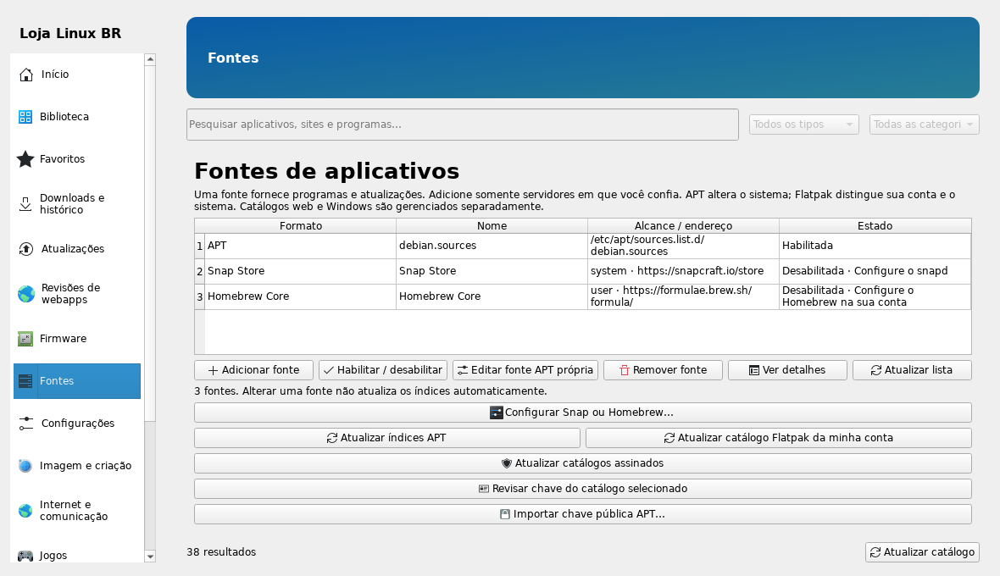

Na Loja, abra Fontes e selecione a origem que quer usar. Para Snap Store e Homebrew Core, confira os pré-requisitos indicados antes de habilitar a fonte. Volte à ficha do aplicativo e selecione a origem disponível. Se a opção estiver bloqueada, consulte a política da organização.
